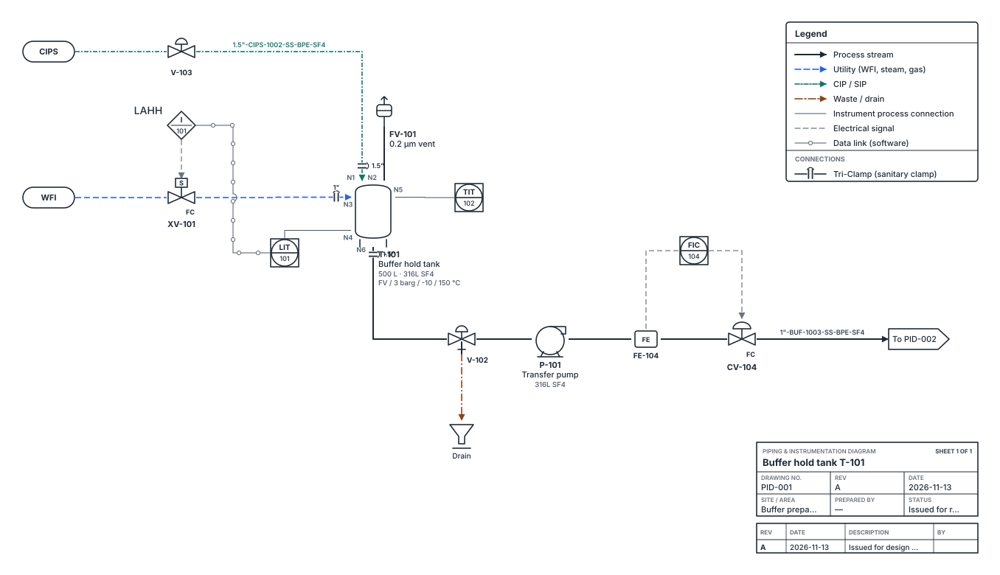
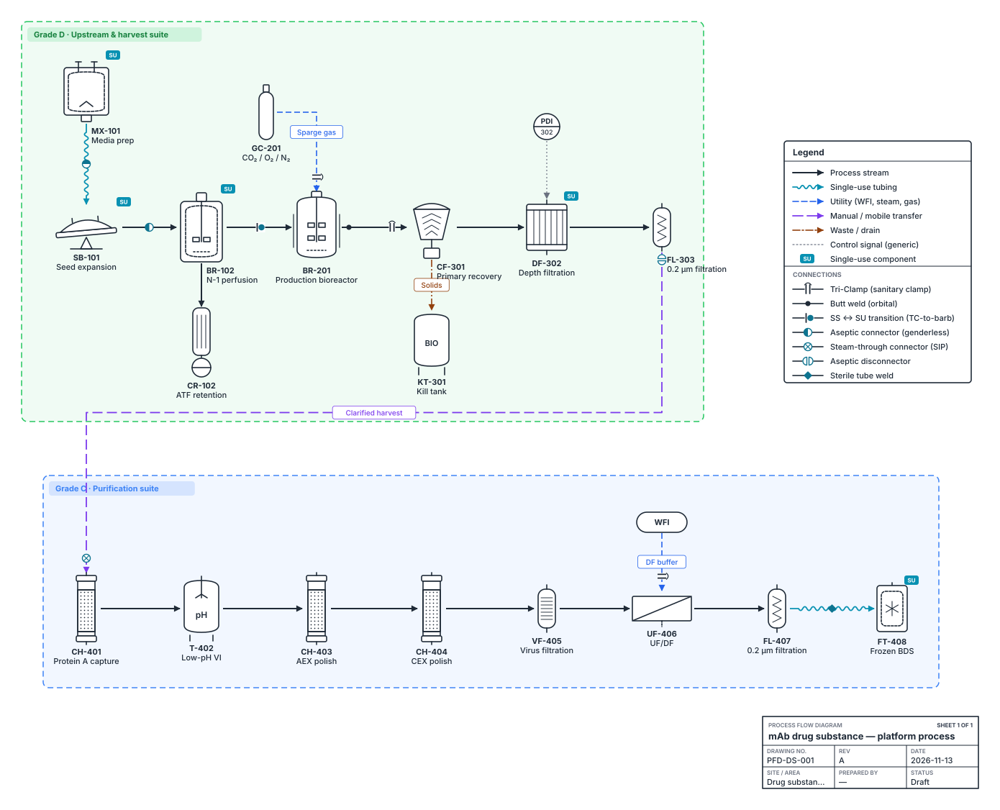
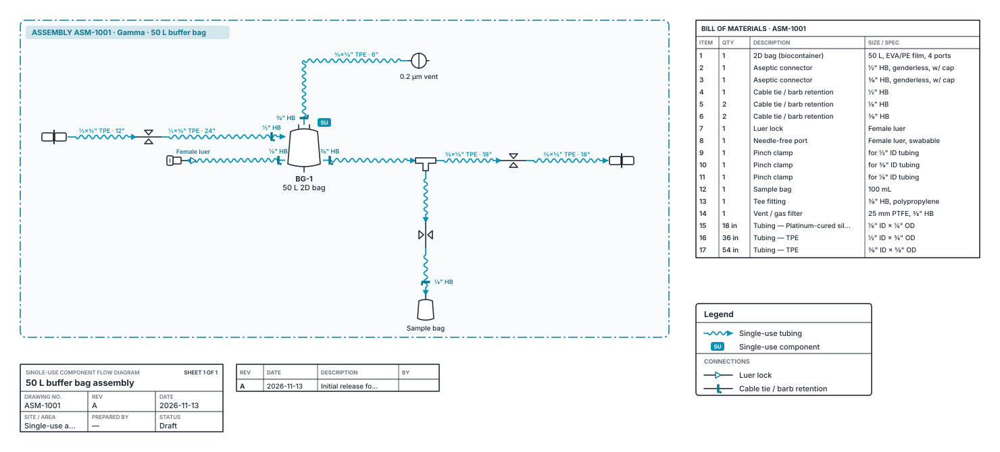

Draw pharma process diagrams in your browser
PFDs, P&IDs and single-use assembly drawings, with the symbols, tags and lists process engineers work with. Free and open source. Nothing to install, nothing uploaded.
MIT licence. No account. Drawings stay on your computer.

One editor, three kinds of drawing
Pick the drawing type and the palette, line styles and title block follow. Each opens below as a worked example you can edit.

Process flow diagrams
Unit operations from seed train and harvest through chromatography, viral clearance, fill–finish and oral solid dose. Cleanroom grades, single-use badges and stream labels.
Open the mAb process exampleP&IDs
ISA-5.1 instruments and control loops, hygienic valves, line tags, nozzle numbers and line jumps. Spread a system over several sheets with linked off-page connectors.
Open the buffer tank P&ID
Single-use assemblies
Bags, tubing with material, ID × OD and length, aseptic connectors, clamps and fittings. The bill of materials fills itself in as you draw.
Open the 50 L bag assemblyThe lists come out of the drawing
Every tag, line number and connector you draw is data. Export the drawing for review, or the lists for your spreadsheet.
Vector, one page per sheet, on A3, A4, 11 × 17 or Letter, or sized to the drawing. | |
| DXF | Opens in AutoCAD, BricsCAD, DraftSight and LibreCAD. One file per sheet, in millimetres, with layers for equipment, valves, instruments, each line type and the title block. |
| CSV lists | Equipment list, line list, instrument index, valve list, connection schedule and single-use bill of materials. They open in Excel. |
| Drawing check | Finds duplicate tags, valves connected on one side only, lines missing size or pipe class, tubing without a length, and off-page connectors that lead nowhere. |
| PNG, SVG, JSON | Images for slides and SOPs, and the editable drawing file to share or reopen later. |
Your drawings stay on your computer
Pidgeon is a single web page that runs in your browser. There is no server behind it, no account, no analytics and no cookies. Drawings are kept in your browser's storage and in the files you save yourself.
That makes it usable for confidential process designs, and it keeps working without a network once the page has loaded. You can also download the source and open app/index.html straight from your own drive.
Conventions you can change
Defaults follow common industry practice so a new drawing reads correctly. Sites with their own standard can replace the code lists in one place.
- Instrument symbols and tags per ISA-5.1, for example
FIC 104, with location and control-system shapes. - Line tags as size, service, number, pipe class and insulation, for example
1.5"-WFI-1001-SS-BPE-SF4. - Hygienic pipe classes and surface finishes in the style of ASME BPE, plus single-use tubing classes.
- Cleanroom zones by EU GMP Annex 1 grade, A to D and CNC.
- Stainless and aseptic connection markers, with sizes, from Tri-Clamp to steam-through connectors.
Not validated software. Use Pidgeon for concept work, design reviews and mark-ups. Drawings that support GMP decisions should be issued through your controlled document system; DXF export is there to make that hand-off easy.
About
Pidgeon is created and maintained by Minhazuddin Mohammed, who publishes it on GitHub as MinaryBytes.
Connect on LinkedIn.
Suggestions, bug reports and symbol requests are welcome through GitHub issues. To cite Pidgeon in a report or paper, use Cite this repository on the GitHub page.
Questions
Is it really free?
Yes. Pidgeon is open source under the MIT licence: use it, change it and share it, including at work and in commercial projects.
Can I use it for company drawings?
Nothing you draw leaves your computer, so it is suitable for confidential designs. Check your company's rules on browser-based tools; because it is a static page, IT teams can also host their own copy internally.
How do I get a drawing into AutoCAD or Visio?
Use Save & export. DXF opens in AutoCAD and other CAD tools with layers and linetypes. SVG pastes into Visio, PowerPoint and Word.
Can it use our site's tag standard or symbols?
The service codes, pipe classes and tag prefixes are short lists at the top of the code. Fork the project and change them, or open an issue describing your standard.
Where is my work saved?
In this browser on this computer, automatically. To move a drawing to another computer or share it, use Save & export and choose the diagram file (.json), then Open it on the other machine.
How do I report a problem or ask for a symbol?
Open an issue on GitHub. Attach the .json file if a drawing shows the problem, after removing anything confidential.